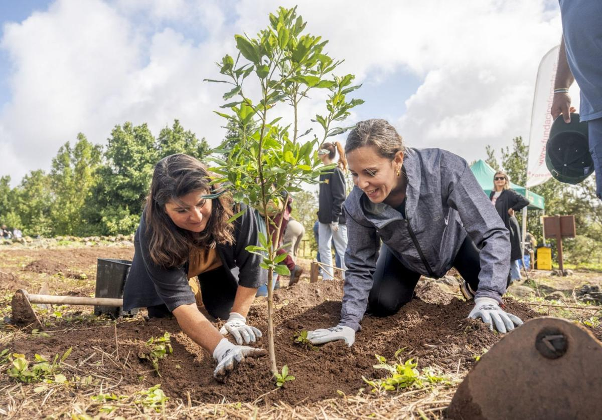

JORNADA DE REFORESTACIÓN

👨🏾💼 Organizador: ARBA Almansa
📅 Fecha: 27 - 29 Junio 2025
📍 Ubicación: Pantano de Almansa, Almansa, España.
⏰ Hora: 10:00 h - 14:00 h
💵 Donación: Jesús Gellida
❗ Recomendaciones: Traer ropa de deporte, calzado adecuado para montaña, guantes y crema solar.
📲 Redes Sociales: Facebook